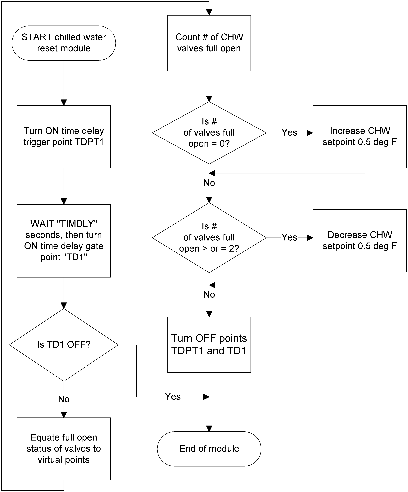

PPCL Program Plans
When you first start programming in PPCL, you need a planning process. One method for planning a PPCL Program is described below.
Step 1 - Read through the specifications
Read the specifications to gain an understanding of what the sequence of operation is asking you to do. If you have a large sequence of operations, you may want to break it down into smaller, manageable sections, such as modes of operation.
Step 2 - Determine modes of operation
Determine the types of modes that will be used during the operation of the system. Defining the modes of operation allows you to design code in a highly organized fashion. Examples of operational modes are day mode, night mode, and safety shutdown mode.
Step 3 - Identify specific controls
This step involves identifying all the tasks that are accomplished through program code. You should look for key phrases such as:
- "This system must control..."
- "Will perform..."
- "Cycle..."
- "Calculate..."
All of these phrases identify some type of control for which you will write PPCL code. Classify each control according to the modes you have defined.
Step 4 - Organize program tasks
Before writing program code, you must decide the order in which program tasks are performed. If you organize the logic of programs, you can reduce the time spent creating, maintaining, and troubleshooting programs.
There are a number of different methods to organize and document program tasks including the following:
Decision Tables
A decision table is a visual tool that divides the sequence of operation into a series of control modes and actions. A piece of equipment is compared to a mode of operation and the result of this comparison is considered to be the status of the equipment during the mode. Decision tables provide a visual representation of how specific equipment interacts with other equipment during each mode.
Example of a Decision Table
The following is an example of a decision table that defines:
Equipment type | Shutdown mode | Day mode | Smoke mode | Warm-up mode |
Supply Fan | Off | On | On | On |
Return Fan | Off | On | On | On |
Chilled Water Valve | Closed | Modulate | Modulate | Closed |
Mixing Dampers | Closed | Modulate | Modulate | Closed |
Flowcharts
A flowchart is a diagram that shows the logical step-by-step progression through the control strategy using directional arrows and a set of conventional symbols. A flowchart visually shows the sequence of operation and how each decision or action leads to the next. You use flowcharts to evaluate and revise a control strategy before a program is written.
Example Flowchart
The following flowchart is an example for a chilled water reset program:

Pseudocode
Pseudocode involves making a list of what you want the program to accomplish. For example, the list might include:
- Check mixed air temperatures
- Check outside air temperatures
- Open/close dampers as needed
- Start/stop fans
The list is an example of how pseudocode works. Pseudocode represents the logical steps a program will perform. Each line of pseudocode is written in a non-syntactical manner. Pseudocode allows you to quickly organize ideas before writing the code. After the code is written, pseudocode can be used as a reference to help others learn about the functionality of the program.